对比学习串烧
百花齐放
InstDisc
里程碑式的工作
Unsupervised Feature Learning via Non-Parametric Instance Discrimination.
提出了代理任务，也就是个体代理任务。
受到了有监督学习方法的启发，认为许多图片样本聚集在一起的原因，并不是因为有相似的语义标签，而是图片本身就很相似。（文中举的例子是分类任务里面，输入一张猎豹的图片，分类得分中排名前几的结果是猎豹，雪豹等，而排名靠后的判断是跟豹子一点关系没有的类别）。
根据这个观察提出了个体判别的代理任务，把class这个类别信号发挥到极致，把每一个instance都看作是一个类别，也就是每一张图片都看作是一个类别。
通过一个卷积神经网络，把所有的图片都编码成一个特征，希望这些特征在最终得到的特征空间里可以尽可能的分开。
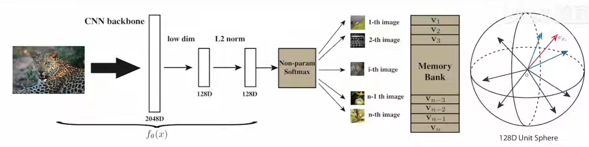
使用对比学习来训练这个卷积神经网络，因此需要有正样本和负样本。正样本是每一张图片本身+数据增强，负样本就是所有其他的图片。
对于大量的负样本特征，使用了’Memory Bank’来存储，相当于一个大字典，由于数据量较大，所以使用是128维的向量来存储特征。每一轮里面，当前batch里的样本为正样本，负样本就从memory bank中随机抽取一部分。
如果有了正样本也有了负样本，就可以使用NCE loss去计算对比学习的目标函数，然后更新完网络之后，再用更新后的网络，对当前的batch里的数据的特征向量进行更新。接下来就反复重复这个过程。
也提出了对特征进行动量更新。
InvaSpread
Unsupervised Embedding Learning via Invariant and Spreading Instance Feature
CVPR 2019
是SimCLR的一个前身
没有使用其他的数据结构来存储负样本，他的正负样本就来自一个mini-batch，而且只使用了一个编码器进行端到端的学习。
主要思想就是，对于相似的物体或者图片，它的特征应该保持不变性(Invariant)，但是对于不相似的物体，特征应该尽可能的分散开(Spreading)。
代理任务上也是选取了个体判别的代理任务，主要特点在于正负样本的获取上
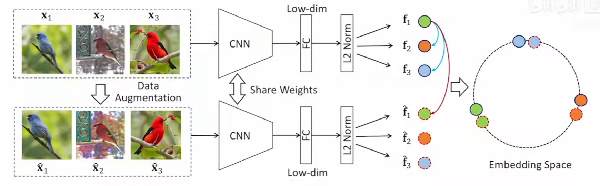
如果batch size是256，经过数据增强后下面又得到了256张图片，对于$x_1$这张图片，正样本就是$x_1$和$x_1^{\prime}$，负样本就是剩下所有的图片。
剩下的过程就和InstDisc相似了，使用的loss也是NCE loss的变体。
CPC(Constrastive Predictive Coding)
Representation Learning with Constrastive Predictive Coding
前面两个工作都是使用个体判别作为代理任务，本文则提出了新的代理任务CPC(Constrastive Predictive Coding).
机器学习主要就可以分成两大类，一类是判别式模型，一类是生成式模型，个体判别属于是判别式范围，本文的CPC就属于生成式的代理任务，比如说这种预测式的任务。
大概的想法是，我们有一个持续的序列，比如输入$x$，有当前时刻的输入($x_{t-3},x_{t-2},x_{t-1},x_t$)，也有未来的时刻的。
把当前时刻的输入全部扔给一个编码器，编码器返回一些特征，把特征喂给一个自回归的模型($g_{ar}$, auto-regression)，常见的比如RNN或者LSTM，就可以得到$c_t$(context representation)，也就是上下文的特征表示。
$c_t$作为prediction的结果，它的正样本是未来时刻的输入通过编码器得到的($z_{t+1},z_{t+2}$)，负样本的定义就比较广泛，可以通过随机抽取样本，通过编码器得到输出，由于是随机抽取的样本，所以得到的输出和prediction应该是很不相似的。
文中使用语音信号举的例子，比如在文字上，可以通过段落里面前面的单词预测后面的单词，对于图片输入，可以从左上到右下形成一个序列，就有了前面的patch和后面的patch，就可以用上半部分的图片来预测下半部分的图片特征。
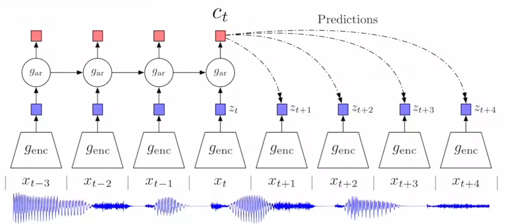
CMC(Constrastive Multiview Coding)
Constrastive Multiview Coding
较早开始利用多视角进行对比学习的工作
一个物体的很多个视角，都可以被当作正样本。
作者从这种观察出发，想要学习一种带有视角不变性的表征。所以本篇工作的目的就是为了最大化不同视角之间的互信息(mutual information)。
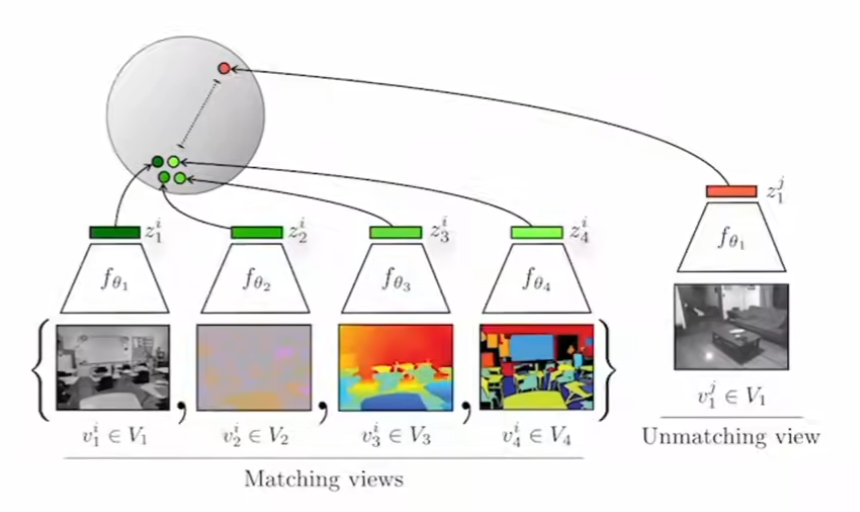
选用的数据集是 NYU RGBD，这个数据集同时有4个view
一个场景的多个view互为正样本，其他的就是负样本。
有一个局限性是处理不同模态时，可能需要不同的编码器，训练代价会比较高。这也是transformer的一个好处，它有可能可以同时处理多个模态的数据。
CV双雄
Moco
Momentum Contrast for Unsupervised Visual Representation Learning
把之前的一些对比学习的方法都归纳总结成了一个字典查询的问题，提出了队列和动量编码器来形成一个大的字典，同时使用动量的方式来更新编码器而不是更新向量特征，从而取得了很好的效果。
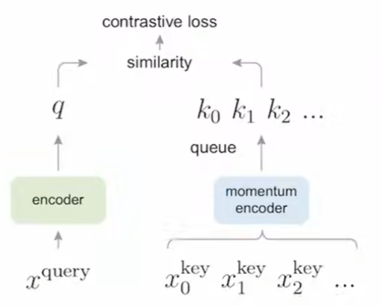
SimCLR
A Simple Framework for Contrastive Learning of Visual Representations
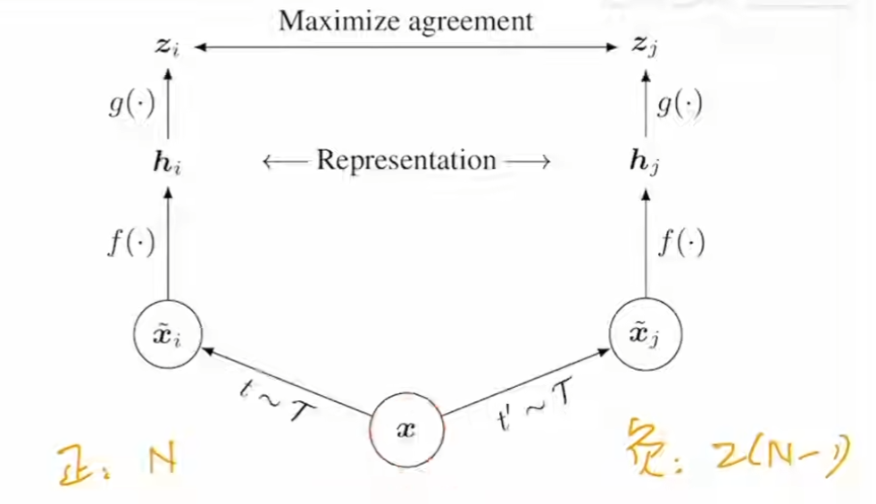
对mini-batch里面的图片$x$做不同的数据增强，同一个图片得到的图片就是正样本，负样本就是剩下的样本及其增广，
主要创新点，在编码器得到的特征之后，加入了一个投射层（一个mlp），分类任务提升很大
同时需要注意的是，投射函数$g$只在使用对比学习进行训练的时候才使用，在用模型得到的特征去做下游任务时，还是只用$h$.
这一篇工作使用了很多的数据增强技术，可以参考。
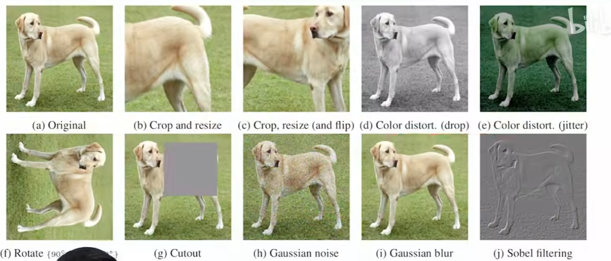
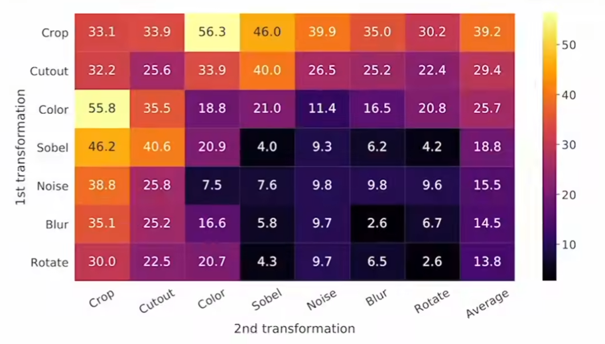
MoCo v2
Improved Baselines with Momentum Contrastive Learning
主要是把SimCLR里面很多即插即用的模块拿到了MoCo里面，取得了很好的效果
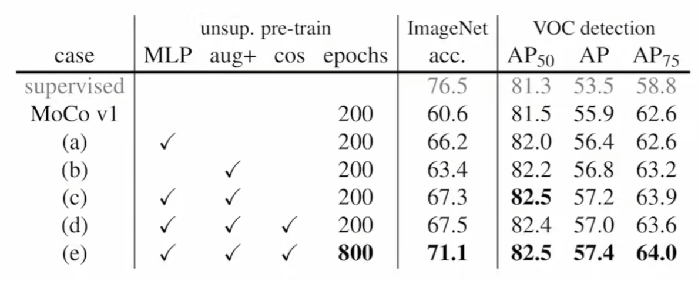
SimCLR v2
Big Self-Supervised Models are Strong Semi-Supervised Learners
其实主要想说的是，这些自监督训练出来的大模型，非常适合用来做半监督的学习。
SwAV
Unsupervised Learning of Visual Features by Constrasting Cluster Assignments
聚类相关的文章可以先去看deep cluster和deep cluster 2
给定同样一张图片，如果去生成不同的视角，希望可以通过一个视角得到的特征去预测另外一个视角得到的特征。
具体做法是把对比学习和聚类的方法结合到了一起。
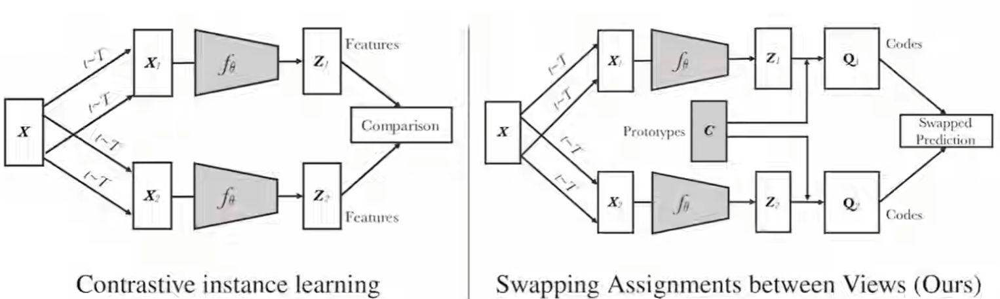
主要想法是，之前的对比学习工作（左图），都是要跟其余所有的负样本（或者是mini-batch里的其余样本）得到的原始特征进行对比，比较原始而且浪费资源。本文作者想通过对比聚类簇的中心，达到对比学习的效果。
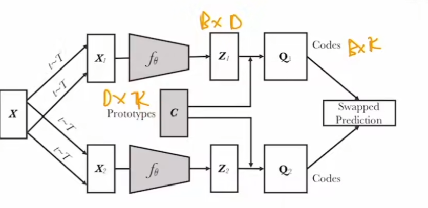
k是聚类中心的个数，D是特征的维度
代理任务也变成了换位预测（swap prediction），即通过聚类中心$c$，$c\cdot z_1=Q_1$作为ground truth，如果$z_1,z_2$足够相似，那么通过$c\cdot z_2$得到的结果应该与$Q_1$很相似，以此实现了换位预测的任务。
用聚类的好处：
- 减少了负样本的数量
- 聚类中心有明确的语义含义，而之前的负样本只是近似
同时本文也提出了一个trick，multi-crop
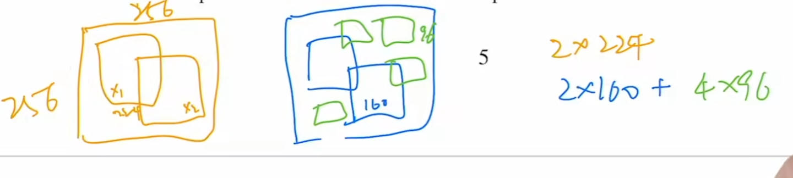
之前的crop(左图)，是crop两个，由于有比较大的重叠，所以互为正样本，但是本文作者认为，这么大的crop，学习到的显然是全局的场景特征，如果想要关注一些更细节的场景，就需要更小的crop，但同时又不能增加太多的计算复杂度，所以提出了右边的multi-crop。2x224 -> 2x160+4x96
不用负样本
BYOL
Bootstrap Your Own Latent A New Approach to Self-Supervised Learning
完全没有用任何形式的负样本，因为之前的负样本其实是一个约束，防止模型直接全出0的捷径解躺平。
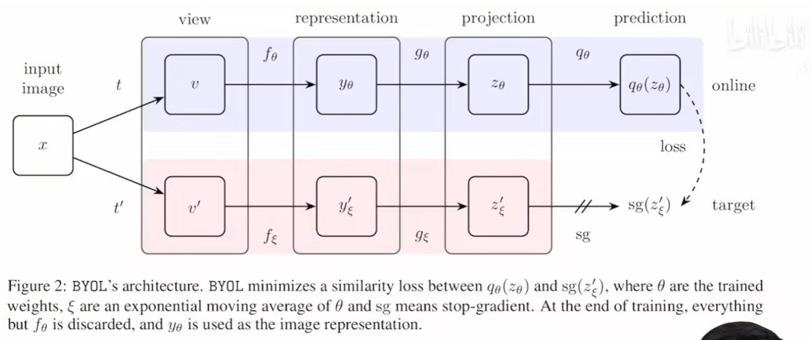
上下两支的编码器，投影层的结构都相同，但是参数不一样。同时上支的编码器$f_{\theta}$是通过梯度更新的，下面的是使用了动量编码器。在得到了两个特征z之后，之前的工作都是让这两个特征尽可能的靠近，是一个配对任务，而BYOL则是在上支又加了一个mlp做预测，变成了一个预测任务。
虽然SwAV也是类似的思路，但是它使用了聚类中心作为辅助，而BYOL则是没有这些辅助。
目标函数直接用的mse loss。跟之前对比学习大多数的info NCE loss不同。
同时有人在复现工作的时候发现，mlp中BN层的设置对模型能不能正常训练，影响很大
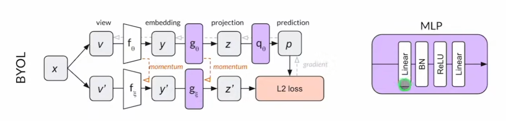
复现工作的人发博客给出了一种解释是，增加了BN之后，其实多了一个任务是用正样本去跟平均样本比较，就和SwAV的聚类中心很像了。
（然后原作者马上回了一篇论文）
BYOL works even without batch statistics
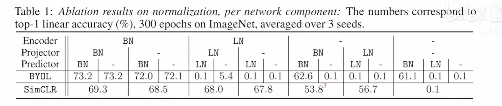
最终达成的一致结论是：如果一开始模型的初始化就比较好，那么后面不用归一化也没有问题，BN主要作用是提高模型训练的稳定性。所以如果使用了很好的初始化方式，后面的归一化操作只是会让模型训练更稳定。
SimSiam
Exploring Simple Siamese Representation Learning
simple siamese networks
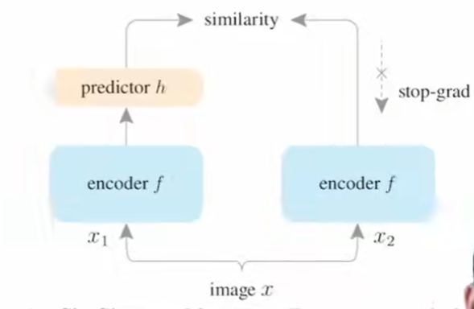
不需要负样本，不需要大batch size，不需要动量编码器
得出的结论是，SimSiam包括BYOL不会模型坍塌的主要原因就是又stop-grad这个操作，可以归结到EM算法(Expectation-Maximization)来解释
Transformer
MoCo v3
An Empirical Study of Training Self-Supervised Vision Transformers
相当于MoCo v2和SimSiam的一个合体
主要贡献是提出了让ViT做自监督训练更加稳定的trick
第一个trick是冻住了ViT的第一步达成patch的投影层，从而使得ViT的训练变的稳定
DINO
Emerging Preperties in Self-Supervised Vision Transformers
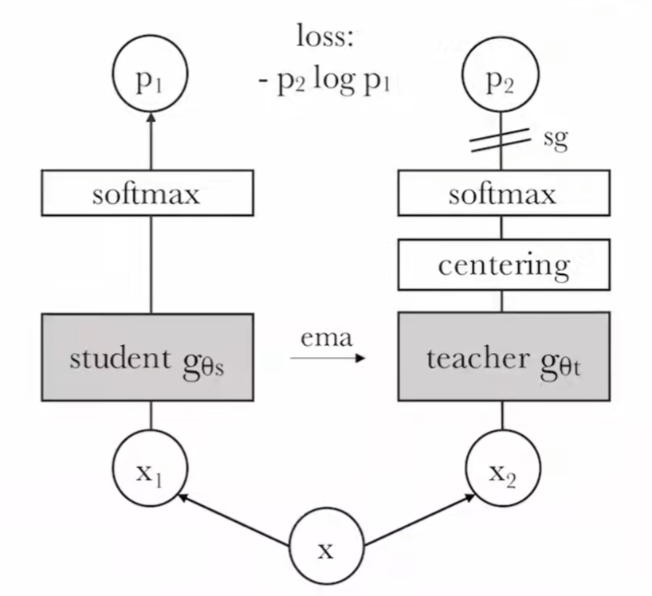
延续了BYOL